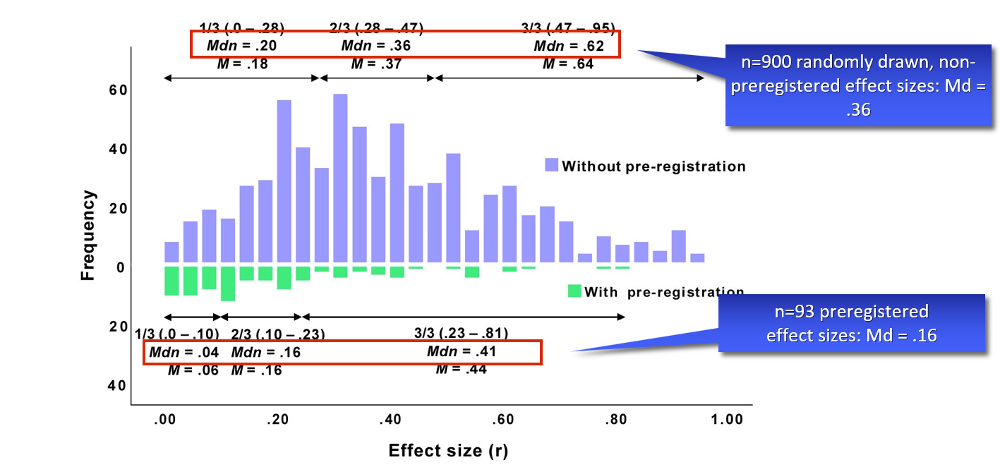

![]()
{kind=link}
flowchart LR
E[" Effect Size
(see Part II of the workshop)"]
D[" Desired Power
usually 80%, 90% recommended for critical
studies (Bondavera, 2013)"]
L[" Significance Level
0.05? 0.005 (Benjamin et al., 2018)? justify
your alpha (Lakens et al., 2018)? "]
S[Sample Size]
L --> S
D --> S
E --> S
Power Analysis: Introduction
Slides: https://osf.io/t5rjf/
Part I: General concepts of power analysis
What is statistical power?
A 2x2 classification matrix
| Reality: Effect present | Reality: No effect present | |
|---|---|---|
| Test indicates: Effect present | True Positive | False Positive |
| Test indicates: No effect present | False Negative | True Negative |
A 2x2 classification matrix
How to do a power analysis
Power is a frequentist property - beware of fallacies!
Power is a pre-data measure (i.e., before data are collected) that averages over infinite hypothetical experiments
- Only one of these hypothetical experiments will actually be observed
- Power is a property of the test procedure/ the design – not of a single study’s outcome!
Power is conditional on a hypothetical effect size – not conditional on the actual data obtained
- “Once the actual data are available, a power calculation is no longer conditioned on what is known, no longer corresponds to a valid inference, and may now be misleading.” ➙ for inference better use likelihood ratios or Bayes factors. Then pre-data power considerations are irrelevant.
Post hoc power considerations
- Using the observed effect size to calculate „post hoc power“ is meaningless (it‘s just a transformation of the p- value)
- It is however meaningful to estimate the power you have achieved with your collected sample size and the a priori assumed effect size („sensitivity power analysis“)
Why power is important
Exercise:
Given that p < .05:
What is the probability that a real effect exists in the population ➙ prob(H₁|D)
this part is not finished as I was unable to find a way to include the text outside the box while not putting another box around it -> see code below
flowchart TB
c1-->a2
subgraph one
a2
end
subgraph two
b1-->b2
end
subgraph three
c1-->c2
end
Assumed that our tested hypothesis are true in 30% of all cases (which is a not too risky research scenario):
A typical neuroscience study must “fail” (p > α) in 90% of all cases
In the most likely outcome of p > .05, we have no idea whether a) the effect does not exist, or b) we simply missed the effect. Virtually no knowledge has been gained.
When a study is underpowered it most likely provides only weak inference. Even before a single participant is assessed, it is highly unlikely that an underpowered study provides an informative result.
Consequently, research unlikely to produce diagnostic outcomes is inefficient and can even be considered unethical. Why sacrifice people’s time, animals’ lives, and societies’ resources on an experiment that is highly unlikely to be informative?
A power analysis helps you to find a balance between…
Researcher‘s intuitions about power
Researcher’s intuitions about power
Calibrate your power feeling
Calibrate your power feeling
Clever designs go a long way
The power of within-SS designs
Why? Each person is his/her own control group
For example, for the paired t-test:
- By computing the within-person difference scores, all between-person variance (which contributes to error variance), gets removed
- Less error variance → less noise → (relatively) more signal → larger effect size
Increase power with reliable measures
- Cohen’s d = 0.4
- N = 30
- pre-post-test
Specific predictions?
Use one-tailed tests!
- One-tailed tests have a higher power than two-tailed tests
- Particularly recommended in combination with a preregistration
- Most power analysis approaches (G*Power, R packages) allow you to chose between one- and two-tailed tests
Any questions so far?
Part II:
Effect sizes / smallest effects of interests
Common effect size metrics
Common effect sizes
Effect size transformations
Effect size transformations
Borenstein, M., Hedges, L. V., Higgins, J. P. T., & Rothstein, H. R. (2009). Effect sizes based on correlations. In Introduction to Meta-Analysis, p. 45-49. Brysbaert, M. (2019) How Many Participants Do We Have to Include in Properly Powered Experiments? A Tutorial of Power Analysis with Reference Tables. Journal of Cognition, 2(1): 16, pp. 1–38. DOI: https://doi.org/10.5334/joc.72 Lakens, D. (2013). Calculating and reporting effect sizes to facilitate cumulative science: A practical primer for t-tests and ANOVAs. Frontiers in Psychology, 4. https://doi.org/10.3389/fpsyg.2013.00863
Converting among effect sizes
Converting among effect sizes
Converting among effect sizes
Converting among effect sizes
Getting a feeling about effect sizes
How do these effect sizes look like?
How do these effect sizes look like?

How do these effect sizes look like?
Guess the correlation
Guess the correlation
Understanding effect sizes
More understandable metrics: „Common Language Effect Size“, CLES:
- …the probability that a randomly sampled person from one group will have a higher observed measurement than a randomly sampled person from the other group (for between designs)
- …or (for within-designs) the probability that an individual has a higher value on one measurement than the other.
Understanding effect sizes
Example: d = 0.4, n = 55 in each group
- Repeated-measures factor: 61% of the participants change into the expected direction
- Between-groups factor: 61% chance of finding the expected ordering if you test a random participant from each sample
Typical effect sizes
Cohen‘s conventions

Is this reasonable?
Typical reported effect sizes I
Richard, Bond, & Stokes-Zoota (2003):
- Meta-meta-analysis; > 25.000 studies, > 8.000.000 participants
- mean effect r = .21 (across literature SD = .15); median = .18
Typical reported effect sizes I
Richard, Bond, & Stokes-Zoota (2003):
Typical reported effect sizes II
Bosco et al. (2015):
- 147,328 correlations from Journal of Applied Psychology and Personnel Psychology
- median effect: r = .16, mean effect r = .22 (SD = .20)
Typical reported effect sizes III
Hill et al. (2008):
- How does the effect of an intervention compare to a typical year of growth in school?
Typical reported effect sizes IV
Funder & Ozer (2019):
Typical reported effect sizes V
Aguinis, Beaty, Boik, & Pierce (2005):
- Effect size of interaction from dichotomous moderator and continuous predictor
Other benchmarks I
Average placebo effect?
d = 0.24 [0.17; 0.31]!
Other benchmarks II (ES: d)
The trustworthiness of effect sizes in the literature
Can we base our power analyses on published effect sizes?
No.
- See RP:P: 83% of all effect sizes are smaller than the original:
Mean original: r = .40 ➙ Mean replication: r = .20 - See also Franco et al. (2015):
Reported ES 2x larger than unreported ES
Can we base our power analyses on published effect sizes?
• See Schäfer & Schwarz (2019), ES: r:

Can we base our power analyses on published effect sizes?
- Suggestion 1: Divide reported effect by 2, compute power analysis.
- Suggestion 2: Safeguard power (Perugini, 2014): Incorporate uncertainty in original study’s ES estimate. Aim lower end of 60%-CI.
Safeguard power
(Perugini et al., 2014)
- Incorporate uncertainty in original study’s ES estimate
- Aim for lower end of 60%-CI
- Example:
- Original study finds d = 0.5 (n = 30 in each group)
- 60% CI = [0.28; 0.72]
- Naive 80% power analysis: n = 64
- Safeguard 80% power analysis: n = 202
- Rewards precise estimates in original study
library(MBESS)
ci.smd(smd=0.5, n.1=30, n.2=30, conf.level=0.60)Write-Up
Write-Up

End
Contact
- @nicebread@scicomm.xyz
- ed.uml.ysp@tdorbneohcs.xilef
- https://www.nicebread.de
- https://github.com/nicebread